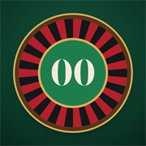
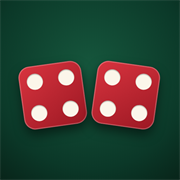

Casino Sims
Practice tables with true odds and fair dice

Double Zero Roulette
American wheel with 0 and 00. Inside and outside bets, saved bet layouts, hot and cold numbers, and the last 20 spins.
Open table
Hard Eight Craps
Standard US layout. Line, come, odds, place, field, hardway and one-roll bets, paid in whole dollars.
Open tablePut it on your iPhone
In Safari, tap Share, then Add to Home Screen. Add this page for one icon with both games, or open a game first to give it its own icon. Your bankroll and history stay on this device.